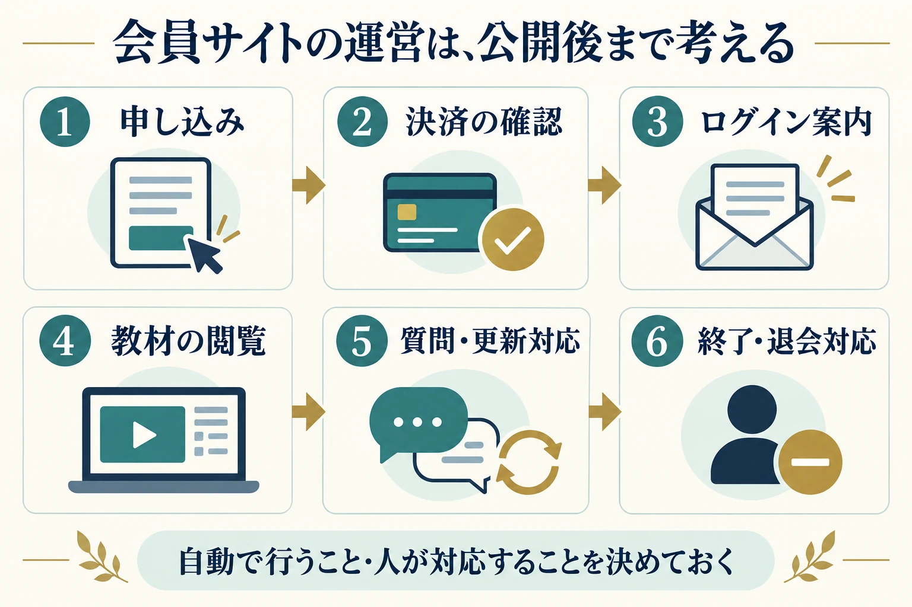

TAF Design · 記事プレビュー
会員サイトを作る前に決めたい5つのこと｜講座・動画販売を始める方へ
「自分の講座を動画で届けたい」「購入した方だけが教材を見られる場所を作りたい」。そんなときに選択肢になるのが、会員サイトです。
ただ、最初から機能やデザインを選ぼうとすると、必要なものが増え続けてしまいます。先に整理したいのは、誰に何を届け、申し込み後にどう使ってもらうかです。
この記事では、講座や動画の販売を考えている方に向けて、会員サイトを作る前に決めたい5つのことをまとめます。まだ教材が完成していなくても、紙に書き出すところから始められます。
会員サイトとは？購入者や受講者だけに教材を届ける場所
会員サイトは、ログインした利用者に、閲覧を許可したコンテンツを提供する仕組みです。オンライン講座の動画、ダウンロード教材、会員向けの記事などをまとめて案内できます。
ただし、決済、動画の保管、質問受付などが、どの仕組みにも最初から備わっているわけではありません。使うサービスや構成によって、できることと費用が変わります。
ここでは、自分の講座・教材を販売する小規模な会員サイトを例に、考える順番を見ていきます。
1．目的を決める｜受講者にどうなってほしいか
最初に「会員サイトを持つこと」の先にある目的を決めます。目的がはっきりすると、必要な教材や機能を選びやすくなります。
- 対面講座の復習用に、動画をいつでも見られるようにする
- 初心者が順番に学べる、買い切りの動画講座を販売する
- 継続会員に、毎月新しい教材や学ぶ機会を届ける
例えば「受講後に一人で基本の作業ができるようになる」が目的なら、動画を大量に並べるより、見る順番と練習課題を分かりやすくすることが大切です。
書き出すこと：この講座を終えた人が、何をできるようになるかを一文にします。
2．利用者を決める｜誰が、どんな場面で使うか
同じ内容でも、初めて学ぶ人と経験者では、必要な説明が違います。すでに受講したお客様向けなのか、初めて出会う方に販売するのかも整理しましょう。
- どの程度の知識がある人を対象にするか
- スマートフォンとパソコンのどちらで見ることが多そうか
- 短い空き時間に学ぶのか、まとまった時間を取って学ぶのか
- ログインや動画視聴に慣れている人か
スマートフォンで見る方が多いなら、小さな文字の資料だけに頼らず、画面上でも内容を追えるか確認します。ログインに不慣れな方には、最初の案内やパスワード再設定の説明も必要です。
書き出すこと：届けたいお客様を一人思い浮かべ、「いつ・どこで・何を使って学ぶか」を考えます。
3．コンテンツを決める｜最初に公開する範囲を絞る
動画、PDF、音声、確認テスト、質問コーナーなど、提供方法にはさまざまな選択肢があります。すべてを最初からそろえる必要はありません。
例えば、初回公開の構成は「案内ページ・基礎動画・練習用PDF・質問先」から始める案があります。これは構成例であり、必要な内容は講座によって異なります。
- 公開初日から必要な教材
- 公開後に追加したい教材
- 全会員が見られるものと、購入講座ごとに分けるもの
- オンラインで見るものと、ダウンロードできるもの
「第1章から順番に学ぶ」のか、「困ったときに必要な動画を探す」のかによっても、一覧の作り方が変わります。
書き出すこと：教材の一覧を作り、「最初に必要」「後から追加」の2つに分けます。
4．運営方法を決める｜申し込みから利用終了までをつなぐ
会員サイトは、教材を置いたら完成ではありません。申し込んだ方が迷わず利用を始められるように、前後の流れも整理します。

少なくとも、次の場面を確認しておきましょう。
- 申し込み後：決済をどう確認し、いつ閲覧権限を付けるか
- 利用開始：ログイン方法をどの連絡手段で案内するか
- 困ったとき：メールが届かない、ログインできない場合の窓口はどこか
- 運営中：教材の追加、質問への返信、システムの更新を誰が行うか
- 利用終了：期限切れや退会時に、閲覧権限と継続課金をどう扱うか
毎回同じ説明を送る作業は、案内文やFAQを整えることから始められます。自動化する場合も、決済の失敗や案内メールの不達など、例外が起きたときの対応は必要です。
書き出すこと：上の流れに沿って「担当者」「使う仕組み」「困ったときの対応」を一行ずつ書きます。
5．料金と提供期間を決める｜続けられる条件にする
販売価格だけでなく、何をいつまで提供するかを決めます。買い切りでも、閲覧期間や質問対応の期間をどうするかは別の話です。
- 買い切り：購入対象の教材、閲覧期限、追加教材の扱いを決める
- 月額：毎月届ける内容、更新頻度、退会後の閲覧範囲を決める
- 期間限定：受講期間、終了後の教材閲覧、質問受付の期限を決める
月額制を選ぶなら、継続して提供する内容と、そのための運営時間も考えましょう。買い切りなら、長期間の保管・保守・問い合わせ対応をどこまで含めるかが重要です。
初期制作費のほかに、利用サービス、動画保管、決済手数料、保守などの費用がかかる場合があります。具体的な金額は、選ぶサービスと必要な機能に合わせて確認します。
書き出すこと：「販売方法・価格・閲覧期間・質問対応の範囲」をひとまとまりで整理します。
制作を相談するときに使える、5項目のメモ
まだ決まっていない項目は「未定」で大丈夫です。このメモがあると、見た目だけでなく、必要な機能と運営方法まで相談しやすくなります。
- 目的：受講者にできるようになってほしいこと
- 利用者：対象者、使う端末、学ぶ場面
- 教材：動画・PDFなどの種類、初回公開の範囲
- 運営：申し込み後の案内、質問受付、更新の担当
- 販売条件：買い切り・月額などの方法、提供期間
例えば、「対面講座の受講者向けに、復習動画とPDFを3か月間提供したい。質問は専用フォームで受け付け、平日に確認する」と書ければ、必要な仕組みを検討する土台になります。これは説明用の例で、実際の提供条件はご自身の講座に合わせて決めてください。
会員サイトの設計・制作をご相談ください
会員サイトは、機能を増やすことよりも、受講者が迷わず使え、運営する側も続けられる形にすることが大切です。
TAF Designでは、会員サイトの制作を承っています。「どの機能が必要か分からない」「教材はあるけれど届け方が決まらない」という段階でも、まずは考えている内容をお聞かせください。
ご希望の決済方法や動画配信、会員管理などの対応範囲と費用は、ご相談内容に合わせて確認します。